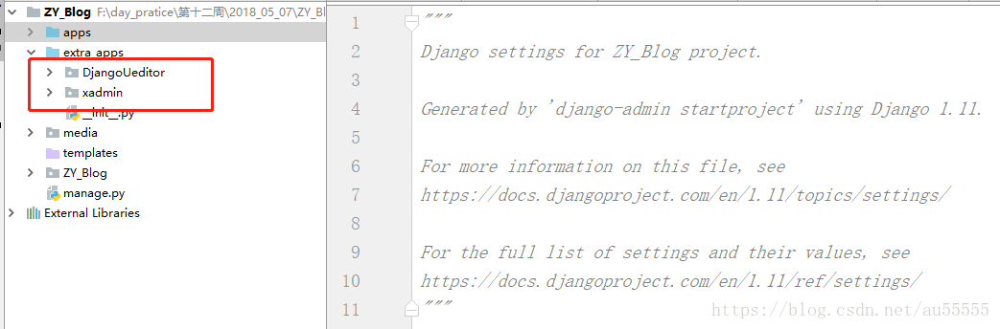
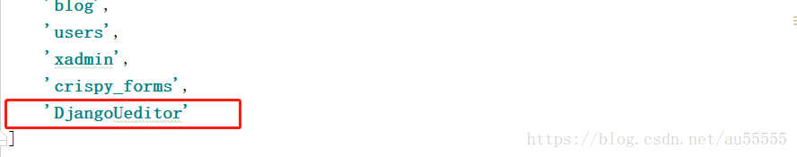
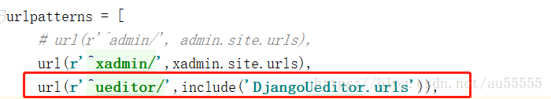
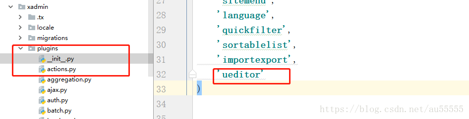
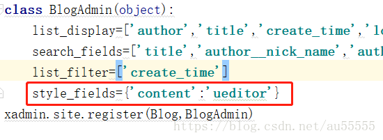

1.https://github.com/twz915/DjangoUeditor3下载包,进入包文件夹,找到DjangoUeditor包拷贝到项目下,和xadmin同级目录

2.找到项目的settings文件,注册app

3.找到项目urls文件,配置DjangoUeditor路由

4.找到app下的models,在需要使用富文本框的字段使用UEditorField,相关参数含义可参考文档:https://github.com/zhangfisher/DjangoUeditor
from DjangoUeditor.models import UEditorFieldcontent=UEditorField(verbose_name='博客内容',width=700,height=400,toolbars='full',imagePath='ueditor/images/',filePath='ueditor/files/',upload_settings{'imageMaxSizing':1024000},default='')
5.xadmin中添加插件ueditor
由于已经将xadmin源文件拷贝到了项目下，为extra_apps/xadmin，在xadmin下的plugin中新建一个ueditor.py文件,添加以下代码:
import xadmin
from xadmin.views import BaseAdminPlugin, CreateAdminView, ModelFormAdminView, UpdateAdminView
from DjangoUeditor.models import UEditorField
from DjangoUeditor.widgets import UEditorWidget
from django.conf import settings
class XadminUEditorWidget(UEditorWidget):
def __init__(self,**kwargs):
self.ueditor_options=kwargs
self.Media.js = None
super(XadminUEditorWidget,self).__init__(kwargs)
class UeditorPlugin(BaseAdminPlugin):
def get_field_style(self, attrs, db_field, style, **kwargs):
if style == 'ueditor':
if isinstance(db_field, UEditorField):
widget = db_field.formfield().widget
param = {}
param.update(widget.ueditor_settings)
param.update(widget.attrs)
return {'widget': XadminUEditorWidget(**param)}
return attrs
def block_extrahead(self, context, nodes):
js = '<script type="text/javascript" src="%s"></script>' % (settings.STATIC_URL + "ueditor/ueditor.config.js") #自己的静态目录
js += '<script type="text/javascript" src="%s"></script>' % (settings.STATIC_URL + "ueditor/ueditor.all.min.js") #自己的静态目录
nodes.append(js)
xadmin.site.register_plugin(UeditorPlugin, UpdateAdminView)
xadmin.site.register_plugin(UeditorPlugin, CreateAdminView)
6.将ueditor插件添加到plugins中的__init__.py的PLUGINS中

7.找到app下的adminx.py文件,配置插件

8.配置上传文件的加载路径
1.在settings里面配置
MEDIA_URL='/media/'
MEDIA_ROOT=os.path.join(BASE_DIR,'media')
#在settings里面配置
from django.views.static import serve
#在urls里面配置
url(r'^media/(?P<path>.*)$',serve,{"document_root":settings.MEDIA_ROOT},name='media')